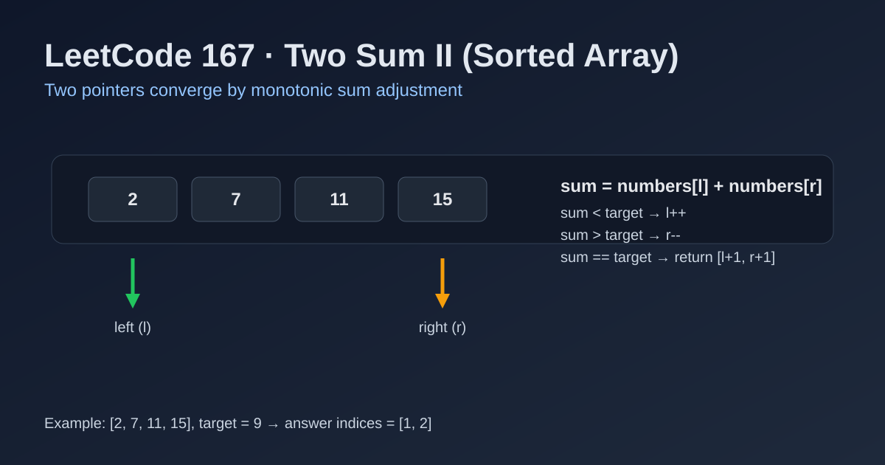

LeetCode 167: Two Sum II - Input Array Is Sorted (Two Pointers Converging)
LeetCode 167Two PointersArrayInterviewToday we solve LeetCode 167 - Two Sum II - Input Array Is Sorted.
Source: https://leetcode.com/problems/two-sum-ii-input-array-is-sorted/

English
Problem Summary
Given a 1-indexed sorted array numbers, return indices [index1, index2] (with index1 < index2) such that numbers[index1 - 1] + numbers[index2 - 1] == target. Exactly one valid answer exists.
Key Insight
Because the array is sorted, the sum of two ends is monotonic: if current sum is too small, move left pointer right; if too large, move right pointer left. This never skips the unique valid pair.
Brute Force and Limitations
Try all pairs in O(n²). Works but wastes the sorted property and is unnecessary under interview constraints.
Optimal Algorithm Steps
1) Set l = 0, r = n - 1.
2) Compute sum = numbers[l] + numbers[r].
3) If sum == target, return [l + 1, r + 1].
4) If sum < target, increase l.
5) Else decrease r.
6) Repeat until found.
Complexity Analysis
Time: O(n).
Space: O(1).
Common Pitfalls
- Forgetting output is 1-indexed.
- Moving both pointers in one step (breaks logic).
- Using hash map and ignoring sorted-array advantage.
- Mishandling negative numbers (two pointers still works).
Reference Implementations (Java / Go / C++ / Python / JavaScript)
class Solution {
public int[] twoSum(int[] numbers, int target) {
int l = 0, r = numbers.length - 1;
while (l < r) {
int sum = numbers[l] + numbers[r];
if (sum == target) return new int[]{l + 1, r + 1};
if (sum < target) l++;
else r--;
}
return new int[0];
}
}func twoSum(numbers []int, target int) []int {
l, r := 0, len(numbers)-1
for l < r {
sum := numbers[l] + numbers[r]
if sum == target {
return []int{l + 1, r + 1}
}
if sum < target {
l++
} else {
r--
}
}
return []int{}
}class Solution {
public:
vector<int> twoSum(vector<int>& numbers, int target) {
int l = 0, r = (int)numbers.size() - 1;
while (l < r) {
int sum = numbers[l] + numbers[r];
if (sum == target) return {l + 1, r + 1};
if (sum < target) ++l;
else --r;
}
return {};
}
};class Solution:
def twoSum(self, numbers: list[int], target: int) -> list[int]:
l, r = 0, len(numbers) - 1
while l < r:
s = numbers[l] + numbers[r]
if s == target:
return [l + 1, r + 1]
if s < target:
l += 1
else:
r -= 1
return []var twoSum = function(numbers, target) {
let l = 0, r = numbers.length - 1;
while (l < r) {
const sum = numbers[l] + numbers[r];
if (sum === target) return [l + 1, r + 1];
if (sum < target) l++;
else r--;
}
return [];
};中文
题目概述
给定一个升序且下标从 1 开始的数组 numbers，返回两个下标 [index1, index2]（满足 index1 < index2），使得 numbers[index1 - 1] + numbers[index2 - 1] == target。题目保证恰好一个解。
核心思路
利用有序性做双指针夹逼：当前和偏小就左指针右移，当前和偏大就右指针左移。因为有序，移动方向具有单调正确性，不会错过答案。
暴力解法与不足
枚举所有二元组时间复杂度 O(n²)，虽然可行，但没有利用“有序数组”这个关键条件。
最优算法步骤
1）初始化 l = 0、r = n - 1。
2）计算 sum = numbers[l] + numbers[r]。
3）若 sum == target，返回 [l + 1, r + 1]。
4）若 sum < target，左指针右移。
5）否则右指针左移。
6）循环直到找到答案。
复杂度分析
时间复杂度：O(n)。
空间复杂度：O(1)。
常见陷阱
- 忘记返回的是 1-based 下标。
- 一次同时移动两个指针，导致漏解。
- 用哈希表写成 O(n) 但失去题目强调的双指针思路。
- 误以为有负数时双指针失效（其实仍然成立）。
多语言参考实现（Java / Go / C++ / Python / JavaScript）
class Solution {
public int[] twoSum(int[] numbers, int target) {
int l = 0, r = numbers.length - 1;
while (l < r) {
int sum = numbers[l] + numbers[r];
if (sum == target) return new int[]{l + 1, r + 1};
if (sum < target) l++;
else r--;
}
return new int[0];
}
}func twoSum(numbers []int, target int) []int {
l, r := 0, len(numbers)-1
for l < r {
sum := numbers[l] + numbers[r]
if sum == target {
return []int{l + 1, r + 1}
}
if sum < target {
l++
} else {
r--
}
}
return []int{}
}class Solution {
public:
vector<int> twoSum(vector<int>& numbers, int target) {
int l = 0, r = (int)numbers.size() - 1;
while (l < r) {
int sum = numbers[l] + numbers[r];
if (sum == target) return {l + 1, r + 1};
if (sum < target) ++l;
else --r;
}
return {};
}
};class Solution:
def twoSum(self, numbers: list[int], target: int) -> list[int]:
l, r = 0, len(numbers) - 1
while l < r:
s = numbers[l] + numbers[r]
if s == target:
return [l + 1, r + 1]
if s < target:
l += 1
else:
r -= 1
return []var twoSum = function(numbers, target) {
let l = 0, r = numbers.length - 1;
while (l < r) {
const sum = numbers[l] + numbers[r];
if (sum === target) return [l + 1, r + 1];
if (sum < target) l++;
else r--;
}
return [];
};
Comments